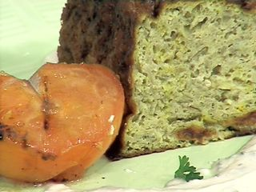

Budín de berenjenas

Receta de: Narda Lepes
Fecha de emision:28/5/2003
Galletas de arroz
Ingredientes
- Arroz común 2 Tazas
- Arroz salvaje 1 Taza
- Queso rallado 1 Taza
- Sal y Pimienta A gusto
Método
- En una cacerola con abundante agua cocine los dos arroces durante 1 hora.
- Escurra y deje bajar la temperatura.
- Procese los arroces con el queso rallado, sal y pimienta hasta obtener una pasta homogénea.
- Reserve en el frío durante 2 horas.
- En una placa previamente forrada con papel manteca distribuya cucharadas de la pasta de arroz, cubra con un film y estire con un palote hasta que queden discos finos.
- Cocine en el horno precalentado a 200º C durante 12 minutos.
Budín de berenjenas
Ingredientes
- Aceite de oliva Cantidad necesar
- Ajo 4 Dientes
- Azafrán 1 Cápsula
- Berenjenas 8 Unidades
- Cebolla grande 1
- Harina 2 cdas.
- Huevos 5 Unidades
- Polvo de hornear 1 cdita.
- Sal y Pimienta A gusto
Método
- Pinche las berenjenas con un palillo, acomode en una placa y cocine en el horno caliente durante 15 minutos.
- Deje enfriar las berenjenas, retire el tallo, ábralas al medio, retire la piel y las semillas.
- Disponga la pulpa de las berenjenas en un colador y deje escurrir bien.
- Procese la pulpa de berenjenas hasta obtener un puré.
- Pique la cebolla y el ajo.
- En una sartén caliente con aceite de oliva rehogue la cebolla con sal.
- Incorpore el ajo y saltee unos minutos más.
- Agregue el puré de berenjenas y deje tomar temperatura.
- En un bowl bata los huevos con sal, pimienta, la harina, el polvo de hornear y azafrán.
- Incorpore la mezcla de berenjenas y mezcle bien.
- Caliente un molde para budín, rocíe con aceite y vierta la mezcla del budín.
- Cocine en el horno precalentado a 170º C durante 30 minutos.
- Rocíe la superficie con aceite de oliva y prolongue la cocción durante 20 minutos más aproximadamente.
Tomates grillados
Ingredientes
- Aceite de oliva Cantidad necesaria
- Sal y Pimienta A gusto
- Tomates 3 Unidades
Método
- Corte los tomates al medio, rocíe con aceite de oliva y cocine en el grill caliente comenzando por el lado de la piel y salpimiente.
Salsa
Ingredientes
Método
- En un bowl combine el yogurt, la mostaza, la crema, el ciboulette, sal y pimienta
Presentación
En el centro de un plato disponga una porción de budín, de lado medio tomate grillado, rocíe los bordes con la salsa, decore con la galleta de arroz y perejil fresco.